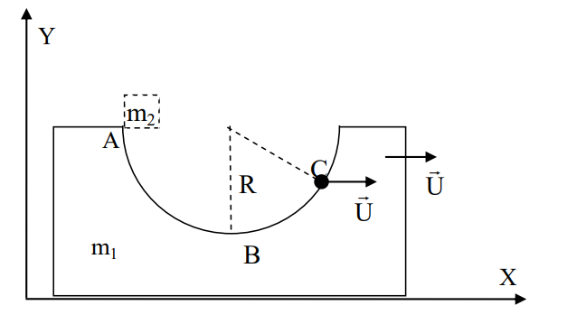
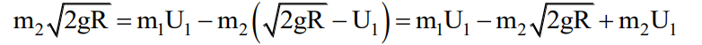

Jism R balandlikdan tushish vaqtida V2B tezlikkacha tezligini oshiradi. Biz jismning V2B tazligini energiyaning saqlanishidan topishimiz mumkin. Jismning muvozanat vaziyatidan dastlabki o'tishidagi impulsi esa sistemaning umumiy impulsi bo'ladi keyingi hollarda u o'zgarmaydi.
Impulsni saqlanish qonuniga ko'ra bu yerda U2 va U1 lar shayba va jismning muvozanat vaziyatidan keyingi hollarda o'tayotgandagi tezligi
Energiya va impulsni saqlanish qonunidan foydalangan holsa tezliklar orasidagi bog'lanishni topamiz:
tenglamalar sistemasining yuqorisidagi formulasini quyisidagi formulasiga bo'lib yuborsak formulalarga ega bo'lamiz.
Bu formulalarni impulsni saqlanish qonuni yordamida topgan formulamiz bilan umumlashtirsak

Munosabatga ya'ni shaybaning eng katta (maksimal) tezligiga ega bo'lamiz.
Endi shaybaning amplitudasini hisoblaymiz. m1A = m2R
Topilgan formulalar yordamida sistemaning tebranish davrini aniqlaymiz.
Javob: